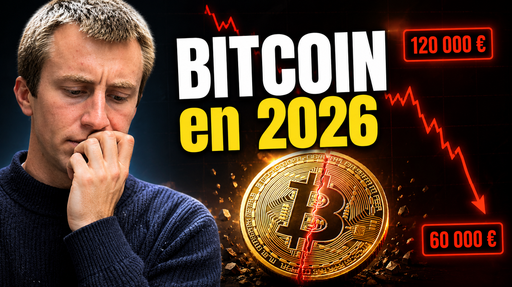

CryptoBitcoin n'est pas une crypto comme les autres
Le premier réflexe de beaucoup de gens, c'est de mettre Bitcoin dans le même sac que toutes les cryptos. C'est une erreur. Bitcoin est la seule crypto qui dispose d'un consensus mondial sur ce qu'elle est : une réserve de valeur numérique, avec une offre limitée à 21 millions d'unités, décentralisée, sans PDG ni siège social à attaquer.
Les altcoins (Ethereum, Solana, etc.) sont des projets technologiques intéressants mais avec des équipes, des feuilles de route, et donc des risques bien plus spécifiques. Bitcoin, lui, a atteint un statut qui le distingue. C'est important pour calibrer le risque quand on réfléchit à une allocation.
Le halving et son impact historique
Tous les 4 ans environ, la récompense accordée aux mineurs de Bitcoin est divisée par deux. C'est ce qu'on appelle le halving. Le dernier a eu lieu en avril 2024. Historiquement, les 12 à 18 mois qui suivent un halving ont correspondu à des périodes de forte hausse du prix, car l'offre nouvelle diminue alors que la demande reste stable ou augmente.
Ce n'est pas une garantie, mais c'est un élément structurel du protocole Bitcoin. En 2026, on est dans la fenêtre post-halving. Cela dit, passé le cycle, la volatilité reste présente. Bitcoin peut perdre 50% en quelques semaines. Aucune exception.
L'arrivée des ETF Bitcoin spot : un changement majeur
Depuis début 2024, les États-Unis ont autorisé les ETF Bitcoin spot (BlackRock, Fidelity, Invesco). Ces produits permettent à des investisseurs institutionnels et particuliers d'acheter du Bitcoin via leur compte-titres classique, sans avoir à gérer des clés privées ou des wallets. Le résultat : des milliards de dollars d'entrées en quelques mois.
En Europe, des ETP (Exchange Traded Products) similaires existent depuis plus longtemps via Bitwise, 21Shares ou WisdomTree. Tu peux en acheter via un CTO chez Degiro ou IBKR. Ils ne sont pas éligibles PEA.
Comment intégrer Bitcoin dans un portefeuille
Si tu décides d'allouer une partie de ton portefeuille à Bitcoin, voici la règle que j'applique : 5 à 10% maximum du portefeuille total. Pas plus. Non pas parce que Bitcoin est forcément mauvais, mais parce que sa volatilité est telle qu'une allocation plus élevée peut te faire perdre le sommeil et te pousser à vendre au pire moment.
L'essentiel du portefeuille reste sur des ETF monde diversifiés. Bitcoin est un complément, pas une base.
Où acheter du Bitcoin en 2026
Plusieurs options selon ton profil :
- SwissBorg : interface simple, adapté aux débutants, bons prix sur les grosses cryptos.
- Coinbase : plateforme solide, réglementée, idéale pour commencer avec des montants modérés.
- Binance : le plus grand exchange mondial, frais très bas, mais interface plus complexe.
- Via un ETP sur CTO : si tu veux rester dans un cadre réglementé classique sans gérer de wallet.
Quelle que soit la plateforme, ne laisse jamais une somme importante sur un exchange. Si tu investis plus de quelques centaines d'euros, transfère tes Bitcoin sur un hardware wallet (Ledger, Trezor). "Not your keys, not your coins" est une règle à prendre au sérieux.
Ouvre ton compte crypto avec un bonus
Binance, Crypto.com, Bitget… Retrouve mes liens de parrainage pour obtenir des réductions sur les frais ou des bonus à l'inscription.
Les risques réels à ne pas ignorer
Bitcoin est volatil. Très volatil. Des baisses de 70 à 80% sur 12 à 18 mois, ça s'est vu plusieurs fois. Ça peut se reproduire. Si tu n'es pas prêt à voir ton investissement divisé par 3 avant qu'il se redresse, n'investis pas une somme qui te déstabiliserait psychologiquement.
Autre risque : le risque réglementaire. Les gouvernements peuvent décider de restreindre l'usage des cryptos. Ça ne tuerait probablement pas Bitcoin (il a survécu à des dizaines de "mort" annoncées), mais ça peut créer des turbulences importantes à court terme.
Dernier point : ne confonds pas Bitcoin et le reste de l'univers crypto. Les altcoins peuvent tomber à zéro. Beaucoup l'ont déjà fait.
Investir avec méthode, pas avec la peur
La formation complète couvre les stratégies d'investissement passives, la gestion du risque et comment construire un portefeuille solide de A à Z.
Accéder à la formation